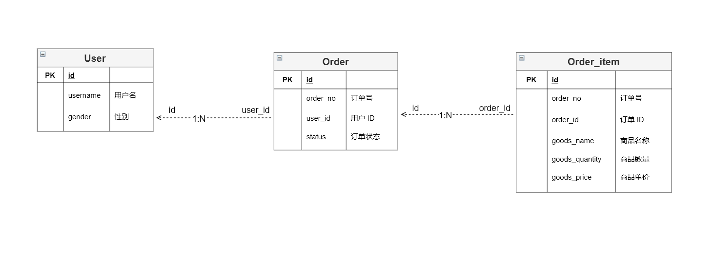

前言
我大概两三年没有使用过 Mybatis 了，最近因为项目的原因重新开始使用 Mybatis，体验上总感觉不丝滑，即使加了 Mybatis plus 也没有达到我心中的预期。
回想这几年用的 JOOQ，直接用 Java 写 SQL 的体验太棒了。它实现的 DSL 完备度很高，几乎和写原生的 SQL 体验差不多了。
那 mybatis 生态有没有类似于这样的框架呢？还真巧了，官方还真就有一个叫 Mybatis-dynamic-SQL 项目。而本文是记录我在集成 Mybatis dynamic SQL、Mybatis Generator 时的一些历程。
整个项目我已经放在 Github （Mybatis-Dynamic-SQL-integration-demo） ，如果你感兴趣可以点个 star，我会持续更新。
观察维度
在开始实际写代码体验之前，我列了四个维度来观察框架是否能符合自己的期望，它们分别是
- Mybatis 生态兼容性
- 代码生成能力
- 无 XML
- DSL 完备度
下面一个一个来过一下
一、Mybatis 生态兼容性
就是要和 Mybatis 既有的生态保持兼容性，比如一些 SQL 日志插件、分页查询插件以及通用的 TypeHandler，二级缓存等
二、代码生成能力
数据库实体可以自动生成，开发者不需要（通常也不允许）修改这一部分自动生成的代码，但开发者可以通过配置项来灵活的制定生成规则以便扩展。
要是代码生成工具能和构建工具（比如 Maven、Gradle）无缝集成那就更好。
三、无 XML
零 XML
四、DSL 完备度（Domain Special Language）
既然是用 Java 的方式来写 SQL，那框架就得对常用的 SQL 有完善的支持，对不常用的 SQL 也能有相应的解决方案。
还有一个点就是写出来的 DSL 和原生 SQL 的差别不能太大，类似于下面这样，几乎一眼就能看懂
public class UserRepository {
public User selectByUsernameAndPassword(String username, String password) {
Tables.User user = Tables.user();
// select * from user where user.name = ? and user.password = ?
return select(user.all()).from(user)
.where(user.username().eq(username))
.and(user.password().eq(password));
}
}
框架简介
Mybatis Dynamic SQL
Mybatis Dynamic SQL 是 Mybatis 团队出的一个框架，兼容 Mybatis3 的生态，但与 Mybatis 最大的不同是：你既不用在 XML 里写 SQL，也不用在 Annotation 里拼接 SQL（用 Java 拼接过复杂字符串的都懂），而是直接以 Java 的方式去写 SQL。
这样会带来以下好处
- Typesafe：在编译期就可以确保你的 sql 参数类型和列类型是一致的
- Expressive：这就是要执行的 SQL 的样子
- Flexible：再复杂的 if else、and、or 都能轻松实现
Mybatis Generator
Mybatis Generator 也是 Mybatis 团队出的代码自动生成工具，它支持 Mybatis3、Mybatis-Dynamic-SQL 等类型的代码生成。提供了非常多的扩展点和预定义配置项，使得用户可以灵活的自定义生成规则。
并且 Generator 也支持多种生成模式，用户可以根据使用场景自行选择
- command 模式：可以通过命令行生成代码
- Maven 插件：直接集成在 Maven 构建工具中
- Java Runtime 模式：通过编写 Java 代码然后运行来生成
- ……
业务集成
接下来就是将这一套框架应用在实际的业务开发场景中去了，看一下是否能够符合我的期望。
业务模拟
我模拟了一个用户、订单相关的业务场景，完整覆盖了增删改查的应用，整个用例如下
数据模型对应了三张表：user、order、order_item，参考下面的 UML

完整的 SQL 请通过 GITHUB 查看：V1__init.sql
项目构建
项目我使用了 Gradle 来构建，引入了 Lombok、Mapstruct 等基于 APT 的代码生成工具。
完整的构建环境和依赖库如下所示
整个项目分了 3 个 module，module 之间的依赖关系如下
每个 module 内部的包如下
- API
该模块提供 http 端口给客户端，它会依赖 Core 和 Dao 模块
- CORE
实现了具体的业务逻辑，不依赖任何 module
- DAO
由 Mybatis 生成的 Mapper、Entity 都会存放在该 Module 下，并且该 Dao 模块内会实现 Core 模块内的 Repository，所以它会依赖 Core 模块
将 Mybatis Generator 集成进 Gradle Task
Mybatis Generator 目前没有官方的 Gradle Plugin 可以集成，但是万能的开源社区却为我们提供了这样的一个 插件
Mybatis-Generator-Plugin (https://github.com/kimichen13/mybatis-generator-plugin)
集成方式也很简单，完整配置可参考 dao/build.gradle
plugins {
id 'java-library'
id "com.thinkimi.gradle.MybatisGenerator" version "2.3"
}
mybatisGenerator {
verbose = true
configFile = 'src/main/resources/generatorConfiguration.xml'
dependencies {
mybatisGenerator group: 'org.mybatis.generator', name: 'mybatis-generator-core', version: '1.4.0'
mybatisGenerator group: 'mysql', name: 'mysql-connector-java', version: '8.0.25'
// you can add jdbc driver here
}
}
代码的生成规则都放在 generatorConfiguration.xml 配置文件中（关于 Mybatis generator 的更多配置可以参考官方文档 ）。
一定记得在 context 标签中配置 targetRuntime="MyBatis3DynamicSql" ，这样才能生成 mybatis dynamic sql 框架需要的代码
<!DOCTYPE generatorConfiguration PUBLIC
"-//mybatis.org//DTD MyBatis Generator Configuration 1.0//EN"
"http://mybatis.org/dtd/mybatis-generator-config_1_0.dtd">
<generatorConfiguration>
<!-- MyBatis3DynamicSql 指定生成 mybatis dynamic sql 的代码 -->
<context id="dsql" targetRuntime="MyBatis3DynamicSql">
<!-- 转义规则 -->
<property name="autoDelimitKeywords" value="true"/>
<property name="beginningDelimiter" value="`"/>
<property name="endingDelimiter" value="`"/>
<!-- 数据库连接 -->
<jdbcConnection driverClass="com.mysql.cj.jdbc.Driver"
connectionURL="jdbc:mysql://localhost:3306/user" userId="root" password="123456"/>
<!-- mybatis type handler -->
<javaTypeResolver>
<property name="useJSR310Types" value="true"/>
</javaTypeResolver>
<!-- 代码生成存放路径 -->
<javaModelGenerator targetPackage="cc.cc1234.dao.model" targetProject="src/main/java"/>
<javaClientGenerator targetPackage="cc.cc1234.dao.mapper" targetProject="src/main/java">
<!-- 为生成的 Mapper 指定父接口 -->
<property name="rootInterface" value="org.mybatis.dynamic.sql.util.mybatis3.CommonSelectMapper"/>
</javaClientGenerator>
<!-- 表和实体的生成规则映射 -->
<table tableName="user" domainObjectName="UserEntity">
<generatedKey column="id" sqlStatement="JDBC" identity="true" type="post"/>
<!-- Gender 字段使用自定义的 typeHandler 处理 -->
<columnOverride column="gender"
javaType="cc.cc1234.core.domain.enums.Gender"
typeHandler="org.apache.ibatis.type.EnumOrdinalTypeHandler"/>
</table>
</context>
</generatorConfiguration>
这样配置完成以后只需要执行 mbGenerator 这个 task 就可以生成代码了，如果你使用的是 Intellij IDEA 的话，可以在右侧工具栏找到该 task
执行玩 task 以后你就能在项目里看见你生成的代码了
生成的代码分析和使用
生成的代码主要包括 xxxMapper、xxxSqlSupport 和 xxxEntity。
- Entity 就是数据库表对应的 Java 实体，仅有 Getter 和 Setter
- Mapper 则是执行 CRUD 的入口，默认已经有了通用的 CRUD 方法
- SqlSupport 则是维护了实体和表的映射关系，比如某个 Field 对应表的某一列
完整的项目我已经开源在了 GITHUB ，你随时可以 fork 下来运行，我这里就只展示部分代码了，
public final class UserEntityDynamicSqlSupport {
@Generated(value="org.mybatis.generator.api.MyBatisGenerator", date="2021-08-29T21:59:12.7120396+08:00", comments="Source Table: user")
public static final UserEntity userEntity = new UserEntity();
@Generated(value="org.mybatis.generator.api.MyBatisGenerator", date="2021-08-29T21:59:12.7120949+08:00", comments="Source field: user.id")
public static final SqlColumn<Long> id = userEntity.id;
@Generated(value="org.mybatis.generator.api.MyBatisGenerator", date="2021-08-29T21:59:12.7120949+08:00", comments="Source field: user.username")
public static final SqlColumn<String> username = userEntity.username;
@Generated(value="org.mybatis.generator.api.MyBatisGenerator", date="2021-08-29T21:59:12.7120949+08:00", comments="Source field: user.gender")
public static final SqlColumn<Gender> gender = userEntity.gender;
@Generated(value="org.mybatis.generator.api.MyBatisGenerator", date="2021-08-29T21:59:12.7120949+08:00", comments="Source Table: user")
public static final class UserEntity extends SqlTable {
public final SqlColumn<Long> id = column("id", JDBCType.BIGINT);
public final SqlColumn<String> username = column("username", JDBCType.VARCHAR);
public final SqlColumn<Gender> gender = column("gender", JDBCType.TINYINT, "cc.cc1234.dao.EnumOrdinalTypeHandler");
public UserEntity() {
super("user");
}
}
}
那么如何用这些生成的代码来构造 SQL 查询呢
对于简单的 CRUD，使用起来是非常简单的
@Autowired
private UserEntityMapper userEntityMapper;
@Override
public Optional<User> selectByPrimaryKey(Long id) {
return userEntityMapper.selectByPrimaryKey(id);
}
@Override
public Long insertAndReturnPrimaryKey(User user) {
final UserEntity entity = userRecordConverter.from(user);
userEntityMapper.insertSelective(entity);
return entity.getId();
}
@Override
public boolean deleteByPrimaryKey(Long id) {
int delete = userEntityMapper.delete(d -> d.where(UserEntityDynamicSqlSupport.id, isEqualTo(id)));
return delete == 1;
}
@Override
public boolean updateByPrimaryKey(User userEntity) {
var record = userRecordConverter.from(userEntity);
return userEntityMapper.updateByPrimaryKeySelective(record) == 1;
}
即使是复杂的查询和类型映射也不难，写出来的感觉和原生 SQL 差距不会很大，基本上一眼就能看懂。
/**
* <pre>
* select user.id, order_item.goods_name, sum(order_item.goods_quantity) from user
* inner join `order` on user.id = `order`.user_id
* inner join order_item on `order`.id = order_item.order_id
* where user.id = 1 group by order_item.goods_name
* </pre>
*
* @param userId
* @return
*/
@Override
public List<UserPurchasedGoods> selectUserPurchasedOrders(Long userId) {
// alias
val user = UserEntityDynamicSqlSupport.userEntity;
val orderItem = OrderItemEntityDynamicSqlSupport.orderItemEntity;
val order = OrderEntityDynamicSqlSupport.orderEntity;
// build sql dsl
val sqlDsl = select(user.id, orderItem.goodsName, sum(orderItem.goodsQuantity).as("goods_quantity"))
.from(user)
.join(order).on(user.id, equalTo(order.userId))
.join(orderItem).on(order.id, equalTo(orderItem.orderId))
.where(user.id, isEqualTo(userId))
.groupBy(orderItem.goodsName)
.build()
.render(RenderingStrategies.MYBATIS3);
// execute and map
return userEntityMapper.selectMany(sqlDsl, map -> {
val result = new UserPurchasedGoods();
result.setGoodsQuantity(Integer.parseInt(map.get("goods_quantity").toString()));
result.setGoodsName(map.get("goods_name").toString());
return result;
});
}
不支持的 SQL
在验证过程中发现 Mybatis Dynamic SQL 有一些 SQL 是没有封装进 DSL 里面的（即存在对应的链式调用方法），比如
INSERT INTO ...... ON DUPLICATE KEY UPDATE...
或者
INSERT IGNORE INTO...
官方也有对应的 issue （https://github.com/mybatis/mybatis-dynamic-sql/issues/82），不过好在虽然 DSL 不支持，但是却可以通过 Mybatis 原生的 @Insert 注解来写这样的原生 SQL，这就需要继承由 Mybatis Generator 生成的 Mapper 了。
由于很多 DB 实现的 SQL 语法都不统一，所以在业务中遇见这种情况还是蛮常见的，好在 Mybatis Dynamic SQL 兼容 Mybatis 的注解功能，那几乎都能通过写原生 SQL 的方式来解决这样的问题。
一个 Bug
我在做 Demo 的时候无意间还碰到了一个 bug，我使用了Mybatis 自带的 EnumOrdinalTypeHandler 来处理枚举类型字段的读和写，结果发现在涉及 Inserrt 或 Update 语句时该 Handler 无法正确的处理并且会抛出异常。
最后通过 debug 发现这是一个小 bug，已经通过 issue （https://github.com/mybatis/mybatis-dynamic-sql/issues/391）的形式反馈给了官方团队，官方也做出了回馈。
要解决这个问题，除了 mybatis dynamic sql 需要改以外，mybatis generator 也需要改，而后者的 release 周期要长一些。
如果你有兴趣的话，可以持续关注。
总结
最后再从自己定的几个考察维度来做一个总结吧
| 观察维度 | 星级 | 说明 |
|---|---|---|
| Mybatis 生态兼容性 | ☆☆☆☆☆ | 几乎兼容 mybatis 现有插件，而且学习成本低 |
| 代码生成能力 | ☆☆☆☆ | 配置项还无法完全覆盖 mybatis 支持的特性，但它的扩展能力很强，可以通过扩展的方式实现 |
| 无 XML | ☆☆☆☆☆ | 完全可以做到 |
| DSL 完备性 | ☆☆☆ | 很多 SQL 还是不支持，对比 JOOQ 的话，这方面相形见绌 |
| 社区活跃度 | ☆☆☆ | Mybatis dynamicc sql 使用的人不多，但是官方一直在保持更新。 Mybatis generator 更新的频次倒不是很活跃。 |
整体体验下来的话我觉得在生产环境中引入 Mybatis Dynamic SQL 是可行的，在引入之前只需要考虑清楚：在某段时间内项目的 SQL 真的需要和代码分离吗？
选择的本质还是在做 trade off。
如果你也无法忍受 mybatis 的 xml 和注解，但又必须使用 mybatis 生态，那 mybatis dynamic sql 或许就是你的不二选择。
如果你不介意是否是 mybatis 生态，那其实我更建议你使用 JOOQ，它的 DSL 更完备，配套的代码生成能力也更强大。